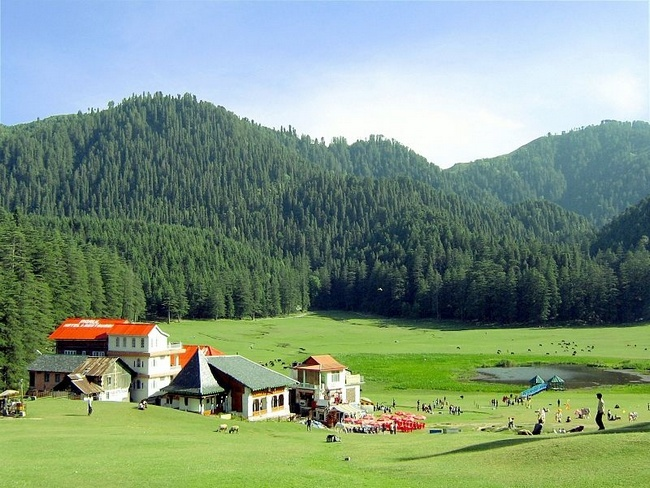

Well this is not the social cause I am talking about but actually the solution to the cause Unemployment.India's tourism industry has huge potential and can be utilised to generate income.Every nook and corner in the country has a story to be told, raw culture that can be experienced. Ironically, we don't realise the value of our cultural heritage while tourists from other nations love to explore sites we hadn't even heard about.
Have you heard of Abhaneri in Rajasthan? You will find many foreigners clicking pictures of this place where The Dark Knight rises was picturised. The most surprising part is that there is no ticket for the place.
Promoting rural tourism is a great way to generate employment. The basic idea is to link the rural people with the tourists.The concept of rural home stays is an emerging trend in Rajasthan.We can provide the contact numbers and details of the people willing to rent their homes for rural home stays, giving a chance to experience the true essence of Rajasthan to the tourists.
Believe me, India is no less than any foreign destination in the world! Click on the picture below
_at_Abhaneri.JPG){kind=link}